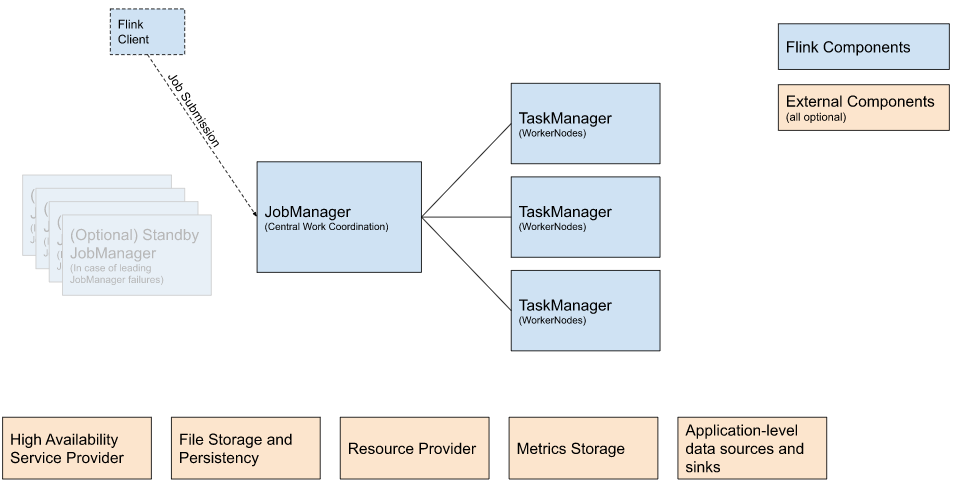
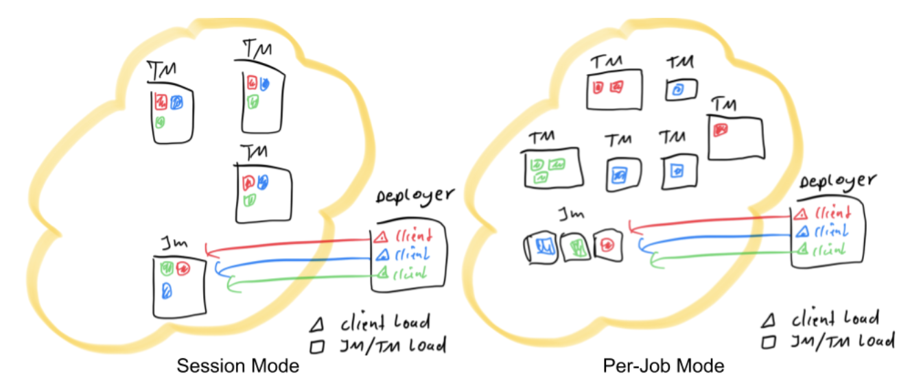
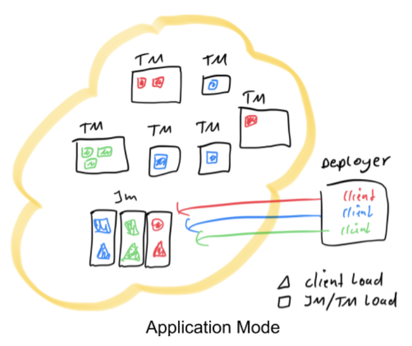

Ch02-Flink 之 应用执行模式
November 3, 2020
Flink 应用程序 是从其 main() 方法产生的一个或多个 Flink 作业的任何用户程序。这些作业的执行可以在本地 JVM（LocalEnvironment）中进行，或具有多台机器的集群的远程设置（RemoteEnvironment）中进行。

Flink 应用程序的作业可以被提交到长期运行的 Flink Session 集群、专用的 Flink Job 集群 或 Flink Application 集群。这些选项之间的差异主要与集群的生命周期和资源隔离保证有关。
1. Flink Session 集群 #
| 名称 | 说明 |
|---|---|
| 集群生命周期 | 在 Flink Session 集群中，客户端连接到一个预先存在的、长期运行的集群，该集群可以接受多个作业提交。即使所有作业完成后，集群（和 JobManager）仍将继续运行直到手动停止 session 为止。因此，Flink Session 集群的寿命不受任何 Flink 作业寿命的约束。 |
| 资源隔离 | TaskManager slot 由 ResourceManager 在提交作业时分配，并在作业完成时释放。由于所有作业都共享同一集群，因此在集群资源方面存在一些竞争 — 例如提交工作阶段的网络带宽。此共享设置的局限性在于，如果 TaskManager 崩溃，则在此 TaskManager 上运行 task 的所有作业都将失败；类似的，如果 JobManager 上发生一些致命错误，它将影响集群中正在运行的所有作业。 |
| 其他注意事项 | 拥有一个预先存在的集群可以节省大量时间申请资源和启动 TaskManager。有种场景很重要，作业执行时间短并且启动时间长会对端到端的用户体验产生负面的影响 — 就像对简短查询的交互式分析一样，希望作业可以使用现有资源快速执行计算。 |
注意：以前，Flink Session 集群也被称为 session 模式下的 Flink 集群。
2. Flink Job 集群 #
| 名称 | 说明 |
|---|---|
| 集群生命周期 | 在 Flink Job 集群中，可用的集群管理器（例如 YARN 或 Kubernetes）用于为每个提交的作业启动一个集群，并且该集群仅可用于该作业。在这里，客户端首先从集群管理器请求资源启动 JobManager，然后将作业提交给在这个进程中运行的 Dispatcher。然后根据作业的资源请求惰性的分配 TaskManager。一旦作业完成，Flink Job 集群将被拆除。 |
| 资源隔离 | JobManager 中的致命错误仅影响在 Flink Job 集群中运行的一个作业。 |
| 其他注意事项 | 由于 ResourceManager 必须应用并等待外部资源管理组件来启动 TaskManager 进程和分配资源，因此 Flink Job 集群更适合长期运行、具有高稳定性要求且对较长的启动时间不敏感的大型作业。 |
注意：以前，Flink Job 集群也被称为 job (or per-job) 模式下的 Flink 集群。

3. Flink Application 集群 #
| 名称 | 说明 |
|---|---|
| 集群生命周期 | Flink Application 集群是专用的 Flink 集群，仅从 Flink 应用程序执行作业，并且 main() 方法在集群上而不是客户端上运行。提交作业是一个单步骤过程：无需先启动 Flink 集群，然后将作业提交到现有的 session 集群；相反，将应用程序逻辑和依赖打包成一个可执行的作业 JAR 中，并且集群入口（ApplicationClusterEntryPoint）负责调用 main() 方法来提取 JobGraph。例如，这允许你像在 Kubernetes 上部署任何其他应用程序一样部署 Flink 应用程序。因此，Flink Application 集群的寿命与 Flink 应用程序的寿命有关。 |
| 资源隔离 | 在 Flink Application 集群中，ResourceManager 和 Dispatcher 作用于单个的 Flink 应用程序，相比于 Flink Session 集群，它提供了更好的隔离。 |
注意：Flink Job 集群可以看做是 Flink Application 集群”客户端运行“的替代方案。
